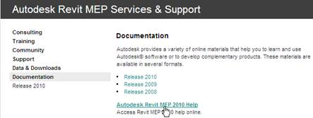

Online Revit Help
Help for the three Revit products is now available on the web, viewable in the browser. Links to the online help are provided on the documentation pages for each of the product centres:

Here are the links to the product centres for the three flavours of the product:
These are the direct links to the help information for each of the three flavours:
The benefits of the online help system include:
- Increased Findability & Usage: Web-based help is now accessible through Autodesk and third-party search engines such as Google.
- Helps Resolve Support Issues: Customers can solve issues themselves through up to date web-based documentation.
- Enables Collaboration: Users can now easily share URL links to product help with colleagues, driving usage and convenience.
- Scalability and Performance: This service is delivered via a global network of servers, ensuring scalability to support direct user access from millions of product seats.
- Increases Efficiency: Publishing is quick and easy, updates can be published in hours as opposed to months.
- Allows Maintainability: Updating product help between releases and service packs is possible, published updates appear immediately with no need to install a service pack.
- Localization-Friendly: Facilitates publishing of localized web-based help.
- Ensures Consistency: The solution generates a consistent URL to link the product to its corresponding web-based help based on the product, release, and language.
- Enables Usage Tracking: Usage statistics can be tracked.